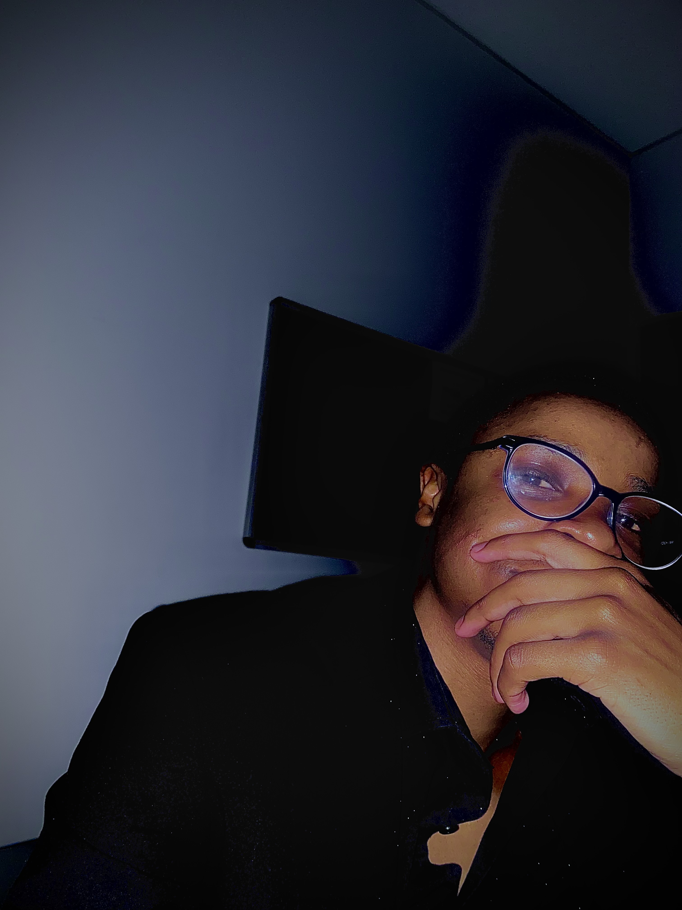

About Me...

From the very beginning, I knew that I wanted to make a difference
in the lives of young learners. Growing up in a community where
education was both a challenge and a key to opportunity, I developed
a deep appreciation for the power of learning, and an even deeper desire
to become the kind of teacher I once needed. That journey led me to
pursue my Bachelor of Education in Foundation Phase Teaching at Walter
Sisulu University, where I immersed myself in understanding how children
grow, learn, and thrive.
During my undergraduate years, I quickly discovered a special passion for
literacy. I was fascinated by how a single storybook could spark imagination,
how phonics could unlock entire worlds for a child, and how a patient teacher
could turn confusion into confidence. It wasn’t just about reading and writing—it
was about empowering children with the tools to understand and express themselves.
I began crafting creative lessons, experimenting with storytelling, puppetry, and
digital platforms to bring language learning to life.
After graduating in 2024, I chose not to stop there. Fueled by a desire to deepen my
expertise, I enrolled in an Honours Degree in Language, Literacy & Literature at the
University of Johannesburg. This program has opened my eyes to advanced pedagogical
theories, research practices, and the socio-cultural dynamics of language acquisition.
It has also pushed me to think critically and innovatively about the role of literacy
in a rapidly changing world.
But what truly sets my journey apart is my integration of technology and education. I
believe that the future of teaching lies at the intersection of heart and hardware, where
compassion meets code. To prepare for this future, I earned a TEFL certification and pursued
cutting-edge courses like Artificial Intelligence in the Fourth Industrial Revolution, also from
the University of Johannesburg. These experiences have equipped me not just to teach, but to lead
in modern classrooms that are hybrid, inclusive, and digitally enriched.
Today, I am not just an educator, I am a lifelong learner, a digital pioneer, and a literacy advocate
committed to nurturing young minds with curiosity, creativity, and care. My mission is to empower
the next generation with the skills, confidence, and vision they need to thrive because every child
deserves a champion who believes in them, even before they believe in themselves.